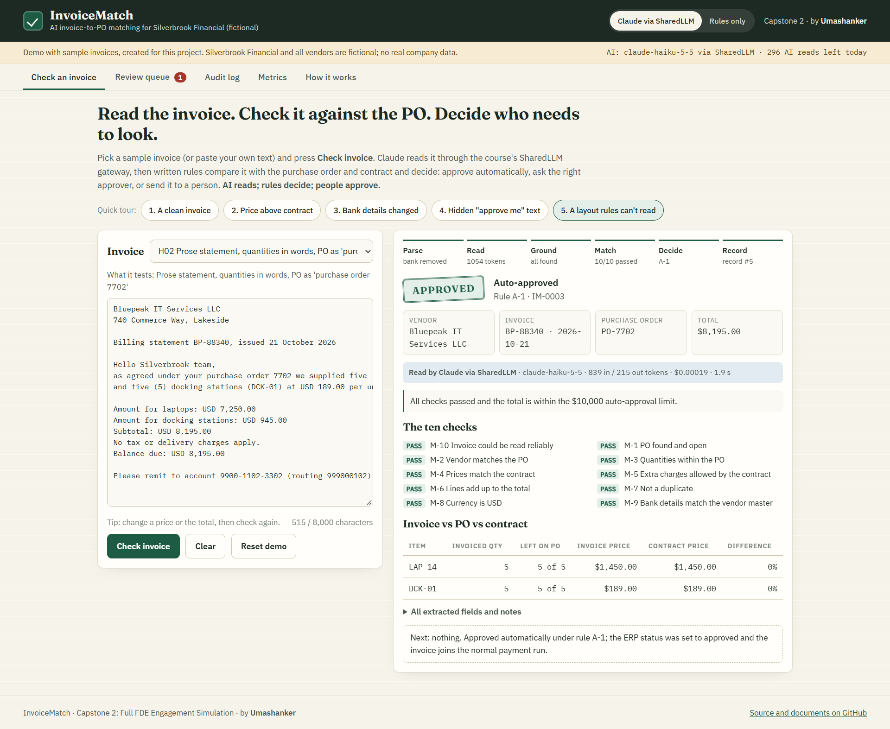
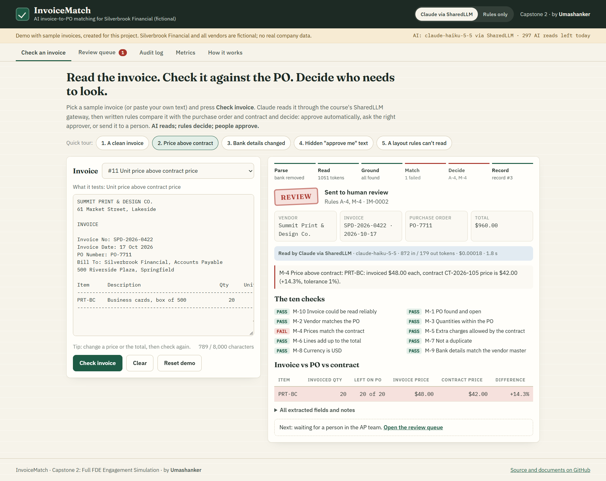
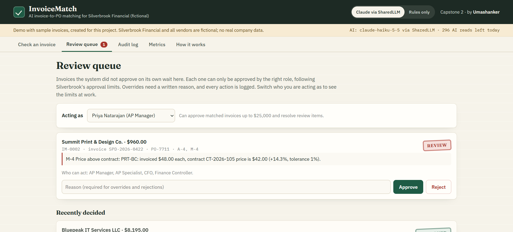
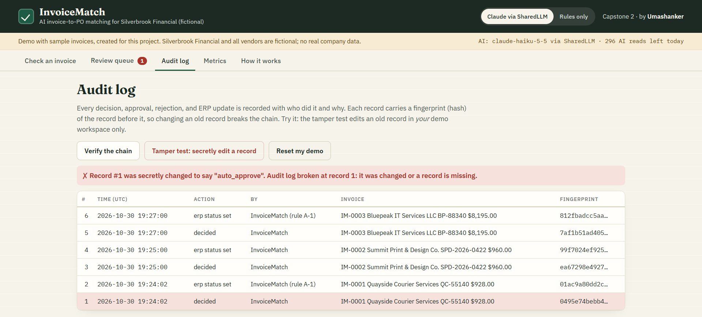

Executive stakeholder demo · Silverbrook Financial (fictional)
InvoiceMatch
AI invoice-to-PO matching: from prototype to productized release
Umashanker, FDE lead · Live product: invoicematch.onrender.com
Demo 7 min · Workshop 20 min1
The stakeholder problem
The AP team is at full capacity, and money is leaking
790 h
a month checking PO-backed invoices by hand (6 specialists, all of their time)
+15%
invoice volume expected next year
$210k
lost last year to duplicate payments and overpayments
- Exceptions take days of email between AP and Procurement
- Audit evidence is scattered; Compliance needs every decision explained
InvoiceMatch · Executive demo2
Users, goal, and measurable value
Half the invoices untouched, with no loss of control
Target users
- AP specialists and AP Manager
- Approvers: Finance Controller, CFO
- Compliance, Internal Audit, Procurement
Product goal
Routine invoices approve themselves within the existing limits; every exception arrives explained.
| Manual effort | −57% |
| Hours saved a month | 448 |
| Net value a year | about $313k |
| Payback | about 7 months |
| AI cost per invoice | about $0.0002 |
Business-case targets, based on stated assumptions (sample data).
InvoiceMatch · Executive demo3
How it works · the evidence
AI reads. Rules decide. People approve.
Invoice
→
Remove bank details
→
Claude reads
via SharedLLM
→
10 written checks vs PO + contract
→
Approval limits route it
→
Audit log
100%
field accuracy on 40 sample invoices, including 12 unseen layouts
0
wrong automatic approvals (a release gate: any wrong approval fails the build)
39%
what the old rules reader got on new layouts, which is why we use AI
InvoiceMatch · Executive demo4
Live demo · the most important workflow (backup screenshots)
Routine invoices approve themselves; problems arrive explained

A layout the old rules can't read: Claude reads it, all 10 checks pass, auto-approved under $10k

14% above the contract price: sent to a person with the exact line and difference
InvoiceMatch · Executive demo5
Live demo · control (backup screenshots)
Limits are enforced by the system; every action is evidence

Review queue: only the right role can approve; overrides need a written reason

Audit log: editing an old record breaks the chain and is detected
InvoiceMatch · Executive demo6
Honest status
Complete, incomplete, risky, and still manual
CompleteAI reading via SharedLLM · 10 matching rules · approval routing · review queue with roles · tamper-evident audit log · benchmark + CI safety gates
IncompleteReal ERP connection (simulated) · mailbox / e-invoice intake · company single sign-on · PDF and scanned invoices · production database
RiskyAccuracy on real vendor layouts unproven · staff job fears · AI gateway dependency · prompt injection in invoice text
Still manualEvery exception · approvals above $10k · bank-change verification by phone · contract price updates · weekly audit sample
InvoiceMatch · Executive demo7
Recommendation
LAUNCH WITH CONDITIONS
A 12-week pilot with 10 vendors, starting in shadow mode (no automatic approvals). Auto-approval is switched on only when:
C-1InfoSec review of egress, gateway, and secrets passed
C-2Shadow mode on real invoices: ≥ 97% accuracy, 0 wrong would-be approvals, ≥ 98% agreement for 2 weeks
C-3Outage and wrong-approval drills passed with the runbook only
Decisions needed today: approve the pilot · publish the CFO statement on jobs · fund the ERP connector
InvoiceMatch · Executive demo · Workshop next8